Idler plate: a drafting exercise in 3D
The example is the idler plate of AutoCAD practice exercise 7a, modeled in 3D. The long hole, the top boss and the curved slot are raised parts. The plate is one sketch that projects the three parts into its plane, connects them with tangents and fillets as in the drawing, and trims the projected pieces that end up inside. Dimensions are in inches.

[1]:
import math
import netgen.occ as occ
from ngsolve_webgpu.jupyter import Draw
import planex as px
The dimensions
The dimensions of the drawing, with the center of the main hole at the origin:
Parameter |
|
|---|---|
|
The long hole: the distance of its end centers, and its outer and inner end radius |
|
From the long hole’s left end center to the lower end of the curved slot |
|
The curved slot: the radius of its center line around the main hole, its angle, and its outer and inner end radius |
|
The top boss: its center, and its outer and hole diameter |
|
The main hole and the arc around it |
|
The blend between the long hole and the boss, and the fillets at the curved slot |
[3]:
slot_pitch = 1.000
R_slot = 0.750
r_slot = 0.437
span = 5.804
R_curve = 2.312
sweep = 40.0
R_cap = 0.875
r_cap = 0.438
boss_center = (-0.750, 1.875)
D_boss = 1.625
d_boss = 0.750
d_main = 1.125
R_bottom = 1.375
R_blend = 1.750
R_fillet = 0.625
The long hole’s left end center lies span to the left of the curved slot’s lower end, at x0:
[4]:
x0 = R_curve - span
The long hole
The long hole is built from the center line between the two slot centers (Figure 1), offset outward for the outside and the inside, and their difference is extruded to 1.
[5]:
slot_line = px.QuickSketch((x0, 0)).Line(slot_pitch)
slot = slot_line.Wire().Offset(R_slot) - slot_line.Wire().Offset(r_slot)
slot_part = slot.ToOCCShape().Extrude(1)
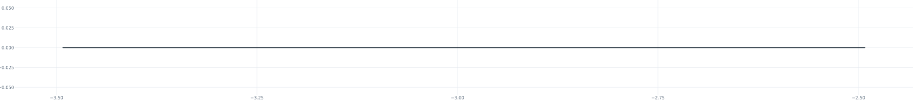
(a) The center line
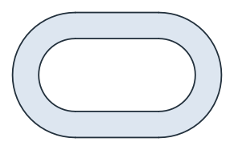
(b) Offset outside minus offset inside
The long hole in 3D:
[7]:
Draw(slot_part)
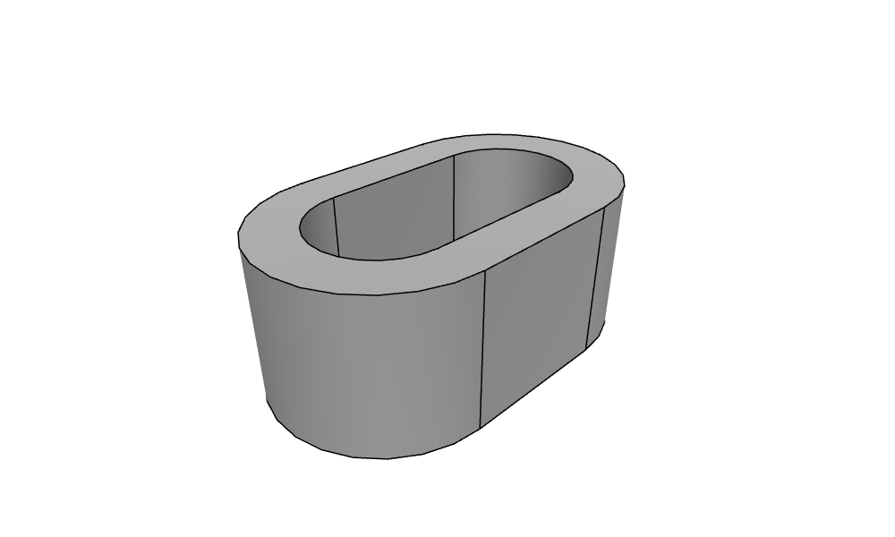
The top boss
The boss has both circles in one sketch, and the inner one becomes the hole (Figure 2).
[8]:
boss_sketch = px.QuickSketch().Circle(*boss_center, D_boss / 2, id="boss_outer")
boss_sketch.Circle(*boss_center, d_boss / 2, id="boss_inner")
boss_part = boss_sketch.Face().ToOCCFace().Extrude(1)
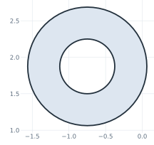
The boss next to the long hole:
[10]:
Draw(occ.Compound([slot_part, boss_part]))
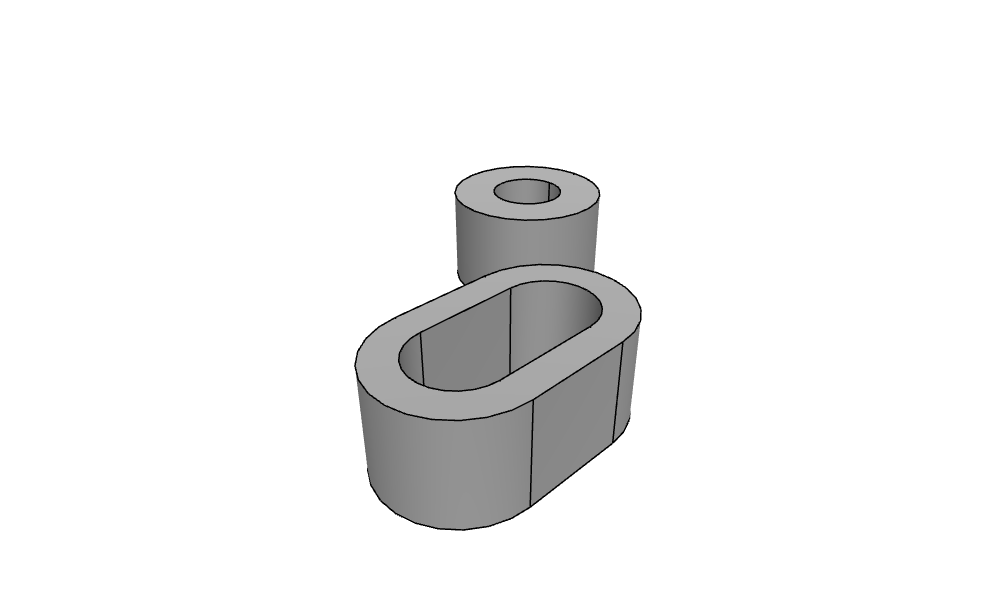
The curved slot
The curved slot is a single arc around the main hole, offset once for the outside and once for the inside, and extruded to 0.5 (Figure 3).
[11]:
arc = px.QuickSketch((R_curve, 0)).Arc(center=(0, 0), sweep=sweep)
curved = arc.Wire().Offset(R_cap) - arc.Wire().Offset(r_cap)
curve_part = curved.ToOCCShape().Extrude(0.5)
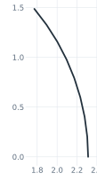
(a) The center arc
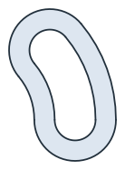
(b) Offset outside minus offset inside
The three raised parts:
[13]:
Draw(occ.Compound([slot_part, boss_part, curve_part]))
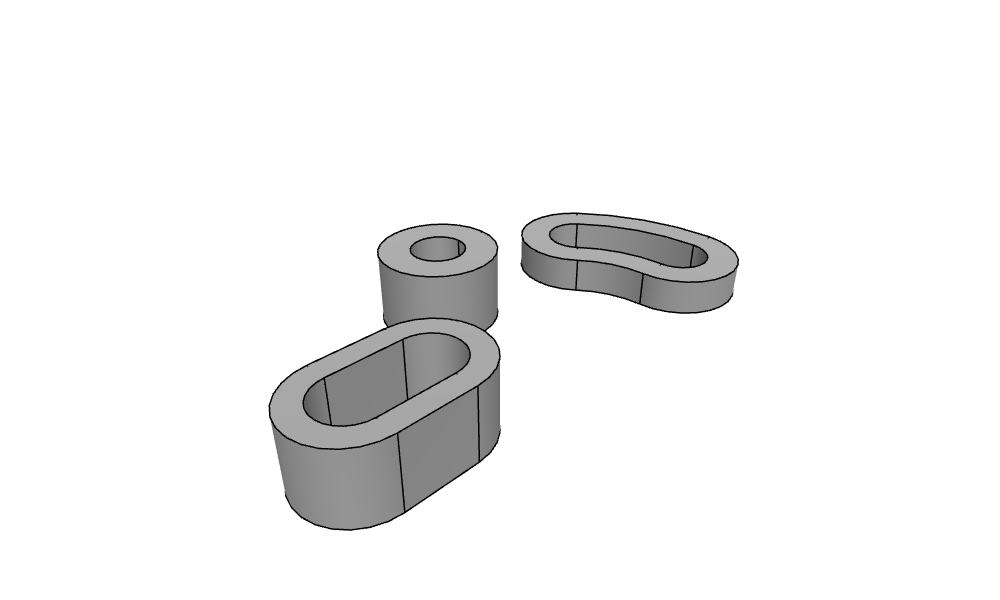
The plate sketch
The plate sketch contains the three parts projected into the plane as drawn edges, the R1.375 circle around the main hole as construction, and the main hole:
[14]:
s = px.QuickSketch()
s.Project(slot_part, construction=False, name="slot")
s.Project(boss_part, construction=False, name="boss")
s.Project(curve_part, construction=False, name="curve")
s.Circle(0, 0, R_bottom, id="r1375", construction=True)
s.Circle(0, 0, d_main / 2, id="main hole")
projected = s.Copy()
Tangents and fillets
The tangents and fillets touch single projected edges, each selected by a point near it. s(name="slot") selects the edges projected from the slot, and of those, the one nearest to the point is the element that the drawing calls take in place of an id:
the bottom line touches the slot’s left end and the R1.375 circle from below;
the R1.750 blend touches the slot’s top edge and the boss;
the R.625 fillets connect the boss and the R1.375 circle to the ends of the curved slot;
the bottom arc follows the R1.375 circle from the bottom line to the lower fillet.
[15]:
def edge(name, point):
return min(s(name=name), key=lambda e: e.Distance(point))
slot_left = edge("slot", (x0 - 1, 0))
slot_top = edge("slot", (x0 + 0.5, 1))
boss_outer = edge("boss", (boss_center[0], boss_center[1] + 1))
cap_top = edge("curve", (R_curve * math.cos(math.radians(sweep)) - 0.6, R_curve * math.sin(math.radians(sweep)) + 0.6))
cap_low = edge("curve", (R_curve, -1))
s.Line(tangent=((slot_left, (x0, -2)), ("r1375", (0, -2))), id="bottom")
blend = ((slot_top, (-3.2, 2.5)), (boss_outer, (-3.2, 2.5)))
s.Arc(*blend, R_blend, tangent=blend, id="blend")
top = ((boss_outer, (0.6, 2.4)), (cap_top, (0.6, 2.4)))
s.Arc(*top, R_fillet, tangent=top, id="fillet top")
low = ((cap_low, (1.5, -1.3)), ("r1375", (1.5, -1.3)))
s.Arc(*low, R_fillet, tangent=low, id="fillet bottom")
s.Arc("bottom", "fillet bottom", congruent="r1375", id="bottom arc")
joined = s.Copy()
Trimming
Every projected piece that lies inside the plate is trimmed:
on the slot, the bottom, the right end, the top right of the blend and a sliver of the left end;
on the boss, everything below the blend and the fillet;
on the curved slot, the inside arc and the inner parts of both ends.
A point on each piece selects the edge and the piece. Trim cuts the edge where it meets the rest of the sketch and makes the piece nearest the point construction: it stays in the sketch, dashed, and is no longer part of the outline. The R1.375 construction circle also cuts, because it crosses the lower half of the boss, which therefore comes in three pieces. Figure 4 shows the sketch at each stage.
[16]:
inside = {
"slot": [(-3.0, -0.75), (-1.74, 0), (-2.7, 0.75), (-3.55, -0.75)],
"boss": [(-1.37, 1.35), (-0.45, 1.12), (0.01, 1.6), (-1.56, 1.97), (0.05, 2.02)],
"curve": [(1.35, 0.49), (0.95, 1.19), (1.55, -0.44)],
}
for name, points in inside.items():
for point in points:
s.Trim((edge(name, point), point))
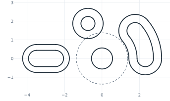
(a) The projected parts
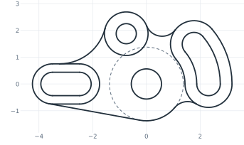
(b) Tangents and fillets
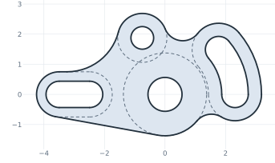
(c) Trimmed
The plate
The outline and the holes of the four parts form one face, which is extruded to 0.5 and united with the raised parts.
[18]:
plate_part = s.ToOCCFace().Extrude(0.5)
idler = slot_part + boss_part + curve_part + plate_part
Draw(idler)
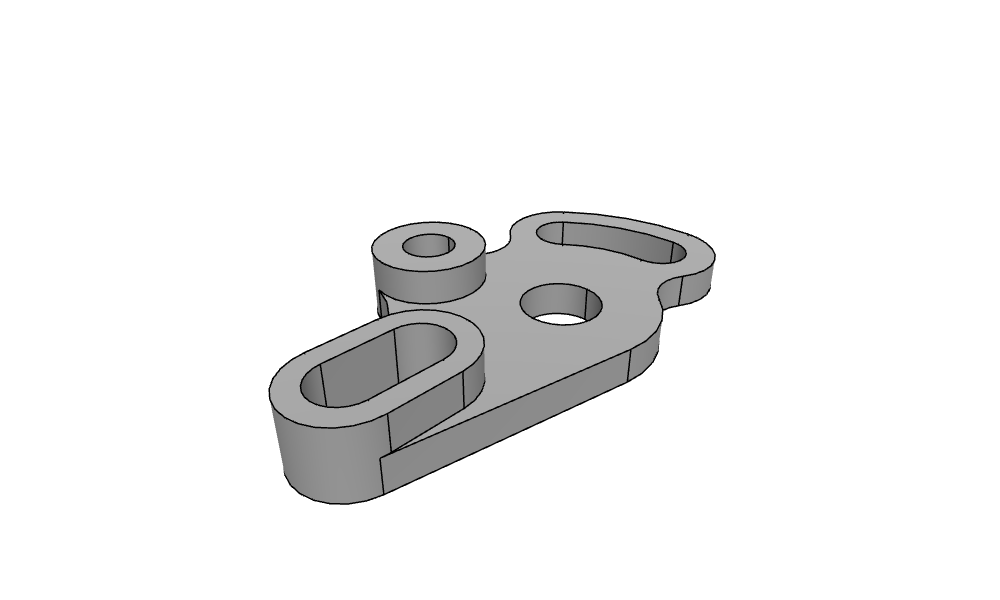
Reading the drawing back
Check: the sketch gives back the dimensions of the drawing. The arcs have their radii, and the bottom line lies R_slot from the slot’s end center and R_bottom from the main hole:
[19]:
for name, r in (("blend", R_blend), ("fillet top", R_fillet), ("fillet bottom", R_fillet), ("bottom arc", R_bottom)):
print(name, "radius", s.Measure(name)["radius"], "drawing", r)
bottom = s.Edge("bottom").edges[0]
print("bottom line from the slot end", bottom.Distance((x0, 0), on_carrier=True), "drawing", R_slot)
print("bottom line from the main hole", bottom.Distance((0, 0), on_carrier=True), "drawing", R_bottom)
blend radius 1.7500000000000004 drawing 1.75
fillet top radius 0.625 drawing 0.625
fillet bottom radius 0.6249999999999999 drawing 0.625
bottom arc radius 1.3749999999999998 drawing 1.375
bottom line from the slot end 0.7499999999999998 drawing 0.75
bottom line from the main hole 1.375 drawing 1.375
Mesh
netgen meshes the part with elements of 0.2 at most, curved to order 3:
[20]:
mesh = occ.OCCGeometry(idler).GenerateMesh(maxh=0.2)
mesh.Curve(3)
print(mesh.ne, "elements")
Draw(mesh)
4784 elements
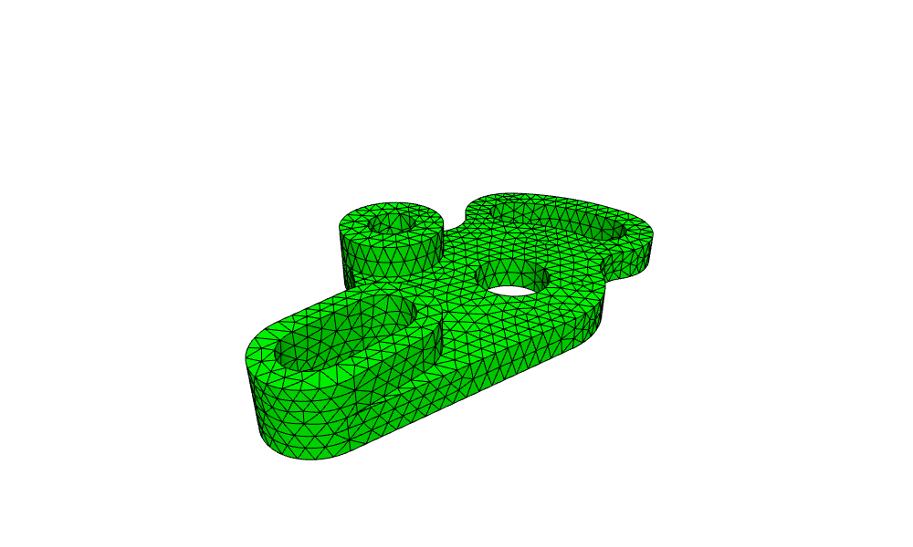